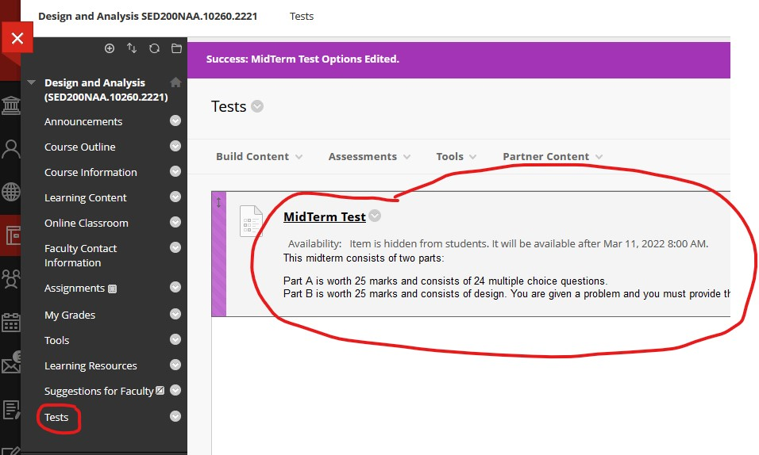

Midterm
- The midterm will open on BlackBoard at 8:00am EST on Friday March 11 and close at 11:59:59pm EST on Monday March 11. It can be found on BlackBoard under
Tests.

- You have 2 hours to complete the midterm and it must be completed in one sitting.
- Part A is worth 25 marks and consists of 24 multiple choice questions.
- Part B is worth 25 marks and consists of design. You are given a problem and you must provide the high-level design,
the low-level design, quality analysis, improvements, the use of artificial intelligence. There is to be no coding.